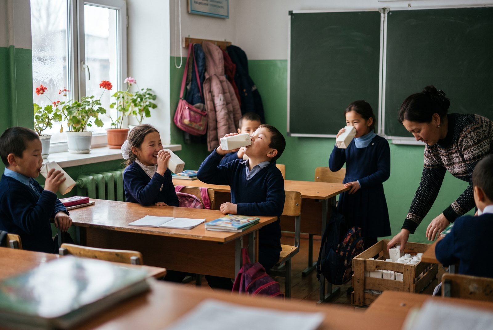
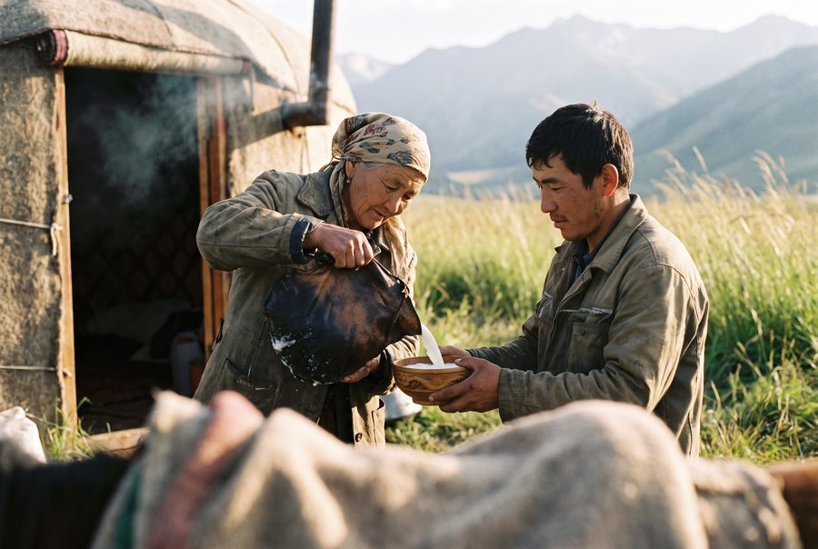
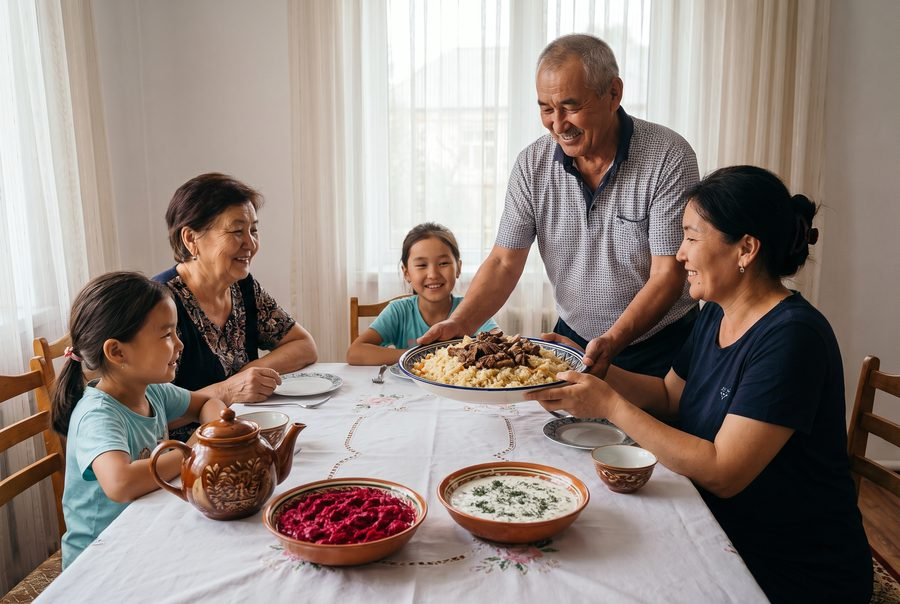
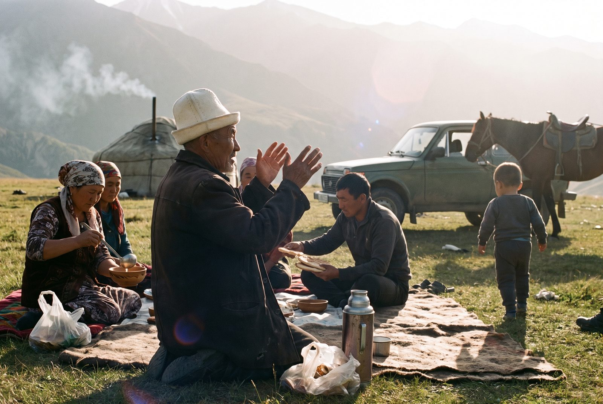

From the Combine, the collection routes and the pastures. For press questions write to press@talas-sut.com.
Winter timetable on the collection routes from 16 November
With the herds down from the pastures and milk falling to winter levels, the tanker routes go over to the winter timetable on 16 November. The three collection points at the foot of the pastures are closed until May.
Members will find their route's new times at their collection point. Milk payments on the 10th, 20th and 30th are not affected.
School milk returns to 140 Talas schools

From Monday every pupil in years one to four at the city's state schools gets a 200 ml carton of milk or kefir each school day, the first time since the programme was cut back in 2019. The cartons are paid for jointly by the Combine and the city education department and delivered with the morning rounds to the shops.
"Most of us at the Combine drank our school milk from this plant," said General Director Damira Sharipova. "The cooperative voted in April to bring it back, and the city met us halfway." The programme runs to the end of the winter term in May, and the board will decide on next year at the spring meeting.
The kymyz season closes

The last Ak Bee kymyz of 2026 was bottled this morning, as the herds come down from the Talas Alatau pastures. Over the season the Combine bottled 1.38 million bottles from the milk of 212 herding families, up from 1.26 million last year, after a wet June kept the high grass long.
Ak Bee will be in the shops for a few more days. The first kymyz of 2027 will be bottled after the kymyz muryndyk next May. Summer contracts for 2027 open on 1 March.
Beet suzma now in Nurzhan

Our beet suzma, made in Talas since 2014 and until now sold only in the Talas valley, is now on the shelves of every Bereke and Jıldız Market in Nurzhan. The 400 g tub is the same red suzma Talas families serve with their Sunday plov.
"Our Nurzhan customers kept asking relatives in Talas to bring it on the bus," said Chief Technologist Viktor Lim. "It made more sense to put it on the night van."
Kymyz muryndyk opens the season

Herding families, Combine staff and neighbours gathered on the pastures above Orto-Ayyl on Sunday for the kymyz muryndyk. After the elder's blessing and the first shared bowl, the collection trucks went up the next morning, and the first bottles of Ak Bee reached the shops on Wednesday.
New milk prices for suppliers from 1 April
The Cooperative Board has raised the price for Grade 1 cow's milk to 3.45 som a litre from 1 April, and for Extra grade to 3.85 som. Mare's milk for the summer contracts will be paid at 9.80 som a litre. The full price list is on our page for farmers.
The general meeting of the Talas Valley Milk Cooperative takes place on 18 April at the Combine's hall. Members receive their papers through their collection point.
The Combine marked sixty years since the city dairy opened beside the railway. A liturgy of thanksgiving was said in the processing hall, and staff and member families sat down to a milk-and-boorsok table in the yard. Retired workers who joined in the 1960s and 1970s were guests of honour.
Products and Production, 1964–2022
Our history, written with the help of retired staff, is out. Copies are free to members at the collection points and to schools and libraries on request; the Combine's hall keeps the old labels, bottles and cartons shown in the book.
The rebuilt laboratory opens
From today every tanker is sampled at the gate and tested for fat, protein, antibiotics and cell count before it is unloaded. Results go to the collection point the same day. Milk with antibiotics is refused and the farm is visited by our vet within the week.
School milk ends with the spring term
The school milk programme in the city schools ends with this term, as the city has not renewed its share of the cost. The Combine thanks the schools and the drivers of the morning rounds.
New fermentation hall; beet suzma in tubs
The new hall for airan, qatiq and suzma has started work inside the old walls. Suzma is still strained overnight in linen bags. Our beet suzma, until now sold by weight at the bazaar stalls, goes into 400 g tubs for the shops.
Ak Bee: kymyz in glass bottles
For the first time the Combine's kymyz is pasteurized and bottled in glass, under the name Ak Bee, the white mare. The first bottles go to the Bereke supermarkets in Talas this week. Ak Bee is made from May to September only, from the milk of herding families in the Talas Alatau.
The cooperative owns the Combine; first cold collection points
With the last block of shares bought from the state, the Talas Valley Milk Cooperative now owns the whole Combine. The first refrigerated collection points have opened in four villages of the valley; evening milk is cooled to 4 °C overnight and collected in the morning.